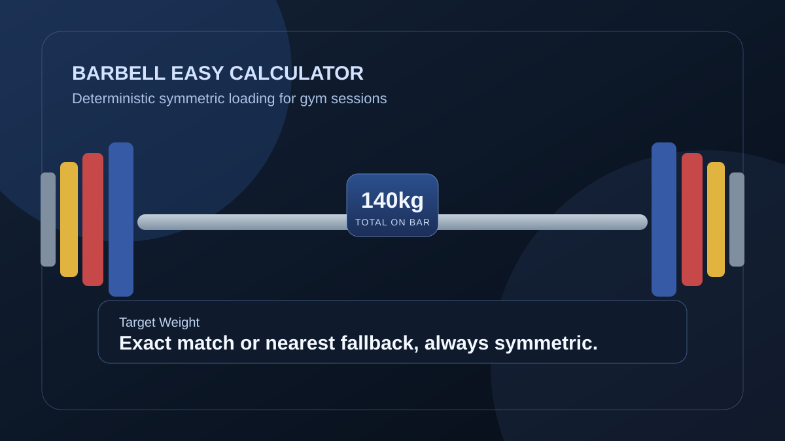
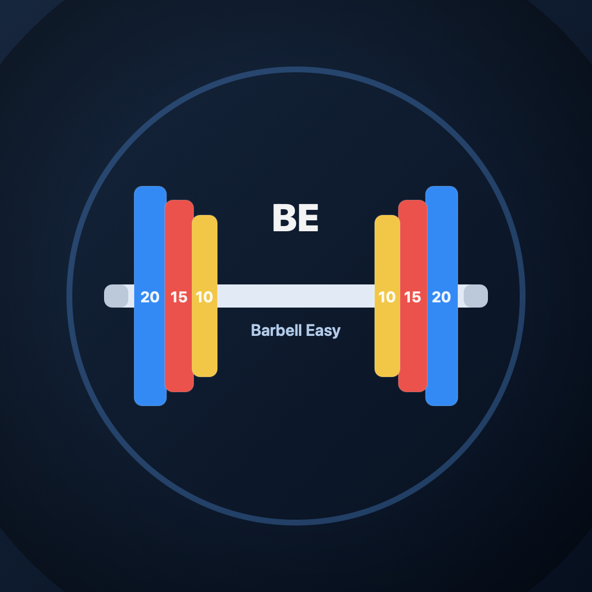

What it is
This repository defines a mobile utility app for barbell loading decisions. It combines deterministic solver output with a visual builder so users can either calculate from a target or construct the bar directly.
Barbell Easy Calculator
MVP foundation
Gym Utility
Barbell Easy Calculator keeps plate loading practical: symmetric by default, exact when possible, and nearest alternatives when reality gets in the way.
This repository defines a mobile utility app for barbell loading decisions. It combines deterministic solver output with a visual builder so users can either calculate from a target or construct the bar directly.
Gym-floor setup is fast and noisy. The project focuses on reducing loading errors, keeping symmetry strict, and making next actions obvious when exact targets are not achievable.
Mental math overhead between sets
Impossible exact targets with limited increments
Inventory mismatch in home or small gyms
Weak connection between numbers and plate layout
Returns repeatable mirrored outcomes with clear exact or nearest status.
Supports Exact Match Priority, Fewest Plates, Easiest to Load, and Nearest Achievable.
Add and remove mirrored plate pairs while watching live bar totals.
Represents bars, enabled plates, and plate counts for different environments.
Persists settings, favorites, and profile choices locally for repeat sessions.
Choose unit, bar, and target total. Review exact loading or nearest alternatives when exact is blocked.
Tap plate values to add mirrored pairs. Tap loaded plates to remove and recalculate live.
Save loads and keep defaults local so repeat sessions start from known conditions.


No backend service is described for the MVP scope. Persistence is local-first.
Yes. The repository includes inventory-aware profile logic and tests for constrained setups.
Yes. Symmetry is a core requirement in solver behavior and test coverage.
This export includes support and privacy paths that can be mapped during central-site integration.
If you want to inspect current capabilities, open the repository and run the documented local workflow.